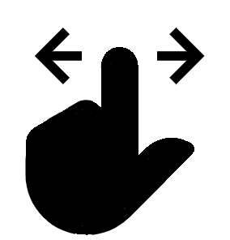

<!--
  Generated template for the AltaMenuPage page.

  See http://ionicframework.com/docs/components/#navigation for more info on
  Ionic pages and navigation.
-->
<ion-header>

  <ion-navbar>
    <ion-title>Alta de {{menu}}</ion-title>
  </ion-navbar>

</ion-header>

<ion-content padding  class="no-scroll">
   
  <form [formGroup]="frm">
      <ion-row>
          <ion-item> 
              <ion-label>Nombre</ion-label>
              <ion-input style="text-align: center" type="text" formControlName="nombre"  required></ion-input>
          </ion-item> 
      </ion-row>
      <br>
      <ion-row>
        <ion-item> 
          <ion-label>Descripción</ion-label>
          <ion-textarea style="text-align: center" type="text" formControlName="descripcion"  required></ion-textarea>
        </ion-item> 
      </ion-row>
      <br>
      <ion-row justify-content-center>
        <ion-col col-6>
          <ion-item> 
            <ion-label>Precio</ion-label>
            <ion-input style="text-align: center" type="number" formControlName="precio"  required></ion-input>
          </ion-item>
        </ion-col>
        <ion-col col-6>
            <ion-item>
              <ion-label>Cantidad</ion-label>
              <ion-input style="text-align: center" type="number" formControlName="cantidad"  required></ion-input>
            </ion-item>
        </ion-col>
      </ion-row>
      <ion-row justify-content-end>
        <ion-col>
            <ion-item>
              <ion-label>Tiempo de Elaboración</ion-label>
              <ion-input style="text-align: center" type="number" placeholder="En minutos" formControlName="tiempoElaboracion" required></ion-input>
            </ion-item>
        </ion-col>
      </ion-row>
      <br>
      <ion-row>
          <ion-list>
              <ion-item-sliding #item>
                <ion-item style="text-align: center">
                  Vincular foto
                  
                </ion-item>
                <ion-item-options side="left">
                  <button ion-button color="dark" (click)="Sacar()"> <ion-icon name="camera" style="zoom:2"></ion-icon></button>
                </ion-item-options>
            
                <ion-item-options side="right">
                  <button ion-button color="dark" (click)="Elegir()"><ion-icon name="photos" style="zoom:2"></ion-icon></button>
                </ion-item-options>
              </ion-item-sliding>
            </ion-list>
      </ion-row> 
      <ion-row>
          <div class="app flex-row align-items-center">   
              <div class="container"> 
                  <div class="card-deck row">
                      <div class="card col-md-6" style="text-align: center" *ngFor="let foto of fotos">
                         
                      </div>
                  </div>
              </div>
          </div>
      
      </ion-row> 
  </form>
  <button ion-button  color="dark" block type="button" (click)='newUpdateProducto()' [disabled]="!frm.valid">Confirmar</button>
  <ion-fab center bottom>
      <button ion-fab  style="background-color:rgb(175,44,245);" (click)="irA('Todos')" ><ion-icon name="list-box"></ion-icon></button>
  </ion-fab>
</ion-content>


<ion-row>
    <ion-col col-6 style="vertical-align: middle;"> 
       
    </ion-col>
    <ion-col col-6 *ngIf="createdCode">
      <ngx-qrcode [qrc-value]="createdCode" style="width:40vw"></ngx-qrcode>
    </ion-col>
</ion-row>